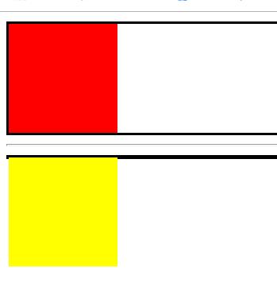

一、设计网页的思想
拿到需求之后我们先对各个模块（盒子）进行划分，然后从外到内进行设计（1）设计一个盒子最基本的设计大致包括背景颜色（其实用于识别），宽，高，边界浮动流还是标准流.
（2）然后盒子和盒子之间的外边距margin
（3）然后在进入到小盒子中，进一步划分盒子，这样再重复第一二步
注意点：我们用背景颜色可以识别出各个模块的具体划分，然后在进入到小盒子进行划分，别忘记最后把原来的大盒子背景颜色去掉。（边界无色为none）
二、浮动元素的高度问题
1.在标准流中内容的高度可以撑起父元素的高度。
2.在浮动流中浮动的元素是不可以撑起父元素的高度的。
<!DOCTYPE html>
<html lang="en">
<head>
<meta charset="UTF-8">
<title>D129_FloatExcriseXia</title>
<style>
.fuyuansu,.fuyuansu1{
border:2px black solid;
}
.biaozhun{
width:100px;
height: 100px;
background-color: red;
}
.fudong{
width:100px;
height: 100px;
background-color: yellow;
float:left;
}
</style>
</head>
<body>
<div class="fuyuansu1">
<div class="biaozhun"></div>
</div>
<hr>
<div class="fuyuansu">
<div class="fudong"></div>
</div>
</body>
</html>
三、源码：
D129_FloatExcriseXia.html
地址:
https://github.com/ruigege66/HTML_learning/blob/master/D129_FloatExcriseXia.html
2.CSDN：https://blog.csdn.net/weixin_44630050（心悦君兮君不知-睿）
3.博客园：https://www.cnblogs.com/ruigege0000/
4.欢迎关注微信公众号：傅里叶变换，个人账号，仅用于技术交流，后台回复“礼包”获取Java大数据学习视频礼包